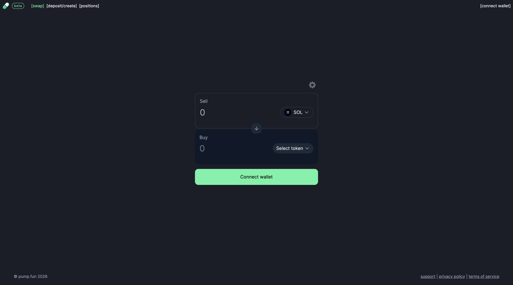

No Code Website Builder
In the vast landscape of cryptocurrency exchanges and swapping platforms, PumpSwap emerges as a unique and intriguing player, designed specifically for memecoin enthusiasts on the Solana blockchain. This article delves into the world of PumpSwap, exploring its features, benefits, and how it is reshaping the way users interact with memecoins within the Solana ecosystem.
PumpSwap is a cutting-edge decentralized exchange (DEX) that provides users with a seamless and efficient platform to swap memecoins on the Solana blockchain. Developed with the aim of catering to the growing demand for engaging with meme-inspired cryptocurrencies, PumpSwap offers a user-friendly interface and a diverse selection of memecoins for trading and swapping.
1. Memecoin Selection: PumpSwap boasts a comprehensive range of memecoins available for swapping, allowing users to access a variety of meme-inspired tokens within the Solana ecosystem. From Doge to Shiba Inu and beyond, PumpSwap provides a platform for memecoin enthusiasts to explore and trade their favorite tokens.
2. Liquidity Pools: PumpSwap facilitates liquidity provisioning through its pools, enabling users to contribute their assets and earn rewards in return. By participating in liquidity pools, users can help maintain the liquidity of memecoins on the platform while earning a portion of the trading fees generated.
3. Low Fees: PumpSwap offers competitive fees for swapping and trading memecoins, ensuring that users can exchange their tokens with minimal overhead costs. This cost-effective approach makes PumpSwap an attractive option for traders looking to maximize their returns.
4. User-friendly Interface: The user interface of PumpSwap is designed with simplicity and functionality in mind, providing an intuitive experience for both novice and experienced users. The platform's easy-to-navigate layout makes it effortless for users to swap memecoins and manage their assets effectively.
5. Community Engagement: PumpSwap fosters community engagement through its support for governance mechanisms, allowing users to participate in decision-making processes that shape the future development of the platform. By empowering the community, PumpSwap ensures that user feedback and insights are integral to its growth and evolution.
1. Diversity of Memecoins: PumpSwap offers a diverse array of memecoins for users to explore and trade, catering to the varied interests of the meme-inspired cryptocurrency community. This diversity ensures that users have access to a wide range of tokens to suit their preferences.
2. Efficient Swapping: With its efficient swapping mechanisms, PumpSwap enables users to quickly and seamlessly exchange their memecoins without encountering delays or complications. This efficiency enhances the overall trading experience on the platform.
3. Community-driven Development: PumpSwap prioritizes community input and engagement, allowing users to have a say in the platform's governance and direction. This collaborative approach ensures that user needs and preferences are at the forefront of PumpSwap's development roadmap.
4. Secure Transactions: PumpSwap leverages the security features of the Solana blockchain to ensure that user transactions are secure and reliable. By utilizing the robust infrastructure of Solana, PumpSwap enhances the safety and integrity of the swapping process.
As PumpSwap continues to evolve and expand its offerings, the platform is poised to play a significant role in the memecoin trading landscape on Solana. With its focus on user experience, community engagement, and a diverse selection of memecoins, PumpSwap is well-positioned to become a prominent player in the decentralized exchange space.
Looking ahead, the future of PumpSwap holds promise for further innovation and growth as it continues to cater to the needs of memecoin enthusiasts and traders within the Solana ecosystem. By embracing user feedback, enhancing platform features, and fostering community collaboration, PumpSwap sets itself apart as a leading destination for memecoin swapping and trading.
In conclusion, PumpSwap represents a dynamic and forward-thinking platform that is revolutionizing the way users interact with memecoins on the Solana blockchain. With its diverse selection of tokens, user-friendly interface, and community-driven approach, PumpSwap stands as a beacon of innovation in the world of decentralized exchanges, offering memecoin enthusiasts a space to trade, swap, and engage with their favorite meme-inspired cryptocurrencies.
At a basic level, PumpSwap uses liquidity pools to facilitate token exchanges. Instead of matching buyers and sellers through a traditional order book, the platform relies on pools containing pairs of digital assets.
For example, a liquidity pool may contain a particular Solana-based token and SOL. When a user wants to trade one asset for another, the transaction interacts with the relevant pool.
The price of an asset can change according to the relationship between the assets available in the pool. Larger trades can affect the pool balance and therefore influence the resulting exchange price.
This automated model is commonly known as an automated market maker, or AMM.
The process can generally be summarized as:
A user connects a compatible Solana wallet.
The user selects the token they want to sell.
The user selects the token they want to receive.
The platform identifies an available liquidity pool.
The user reviews the expected transaction details.
The user approves the transaction through their wallet.
The Solana network processes the transaction.
The purchased tokens are transferred to the user's wallet.
Because transactions occur on-chain, users can generally verify transaction information through Solana blockchain explorers.
Solana has become one of the major ecosystems for decentralized applications, particularly in areas such as decentralized finance, NFTs, gaming, and community-driven tokens.
One of Solana's biggest advantages is its ability to process transactions quickly while maintaining relatively low network fees compared with many other blockchain networks. These characteristics are particularly useful for decentralized exchanges, where users may make frequent transactions.
PumpSwap benefits from this underlying infrastructure. Traders can interact with Solana-based tokens without needing to move assets between multiple blockchain networks.
The platform also fits into a broader trend in which token creation and token trading are becoming increasingly accessible. Users can create tokens with relatively little technical knowledge, while decentralized exchanges provide infrastructure for secondary-market trading.
PumpSwap is closely connected to Pump.fun, a popular Solana-based token-launch platform.
Pump.fun allows users to create tokens and establish an initial market for them. Historically, tokens reaching certain conditions could move into external decentralized liquidity environments. PumpSwap was introduced as a native trading venue for tokens graduating from the Pump.fun ecosystem.
This connection creates a more integrated pathway from token creation to decentralized trading.
For token creators, the model can provide a way for tokens to continue trading after their initial launch phase. For traders, it can provide access to a large selection of newly created assets.
However, accessibility also comes with significant risks. The ease of launching tokens means that users must carefully evaluate projects before committing funds.
PumpSwap represents an important development in Solana's decentralized trading ecosystem. By providing liquidity-based token swaps and connecting closely with the Pump.fun token-launch environment, it offers a pathway for users to trade a wide range of Solana-based assets.
However, convenience should not be confused with safety. Decentralized trading places greater responsibility on users to verify websites, token addresses, transactions, liquidity, and wallet permissions.
For experienced cryptocurrency users, PumpSwap can be an interesting part of the Solana trading landscape. For newcomers, learning how decentralized exchanges, liquidity pools, slippage, and wallet security work should come before committing significant funds.
As decentralized finance continues to develop, platforms such as PumpSwap demonstrate how blockchain technology is changing the way digital assets are created, traded, and accessed.
No Code Website Builder